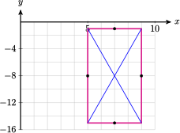

Section 9.4 Conic Sections: Hyperbolas
Subsection 1. Write a quadratic equation in standard form
The parameters in the standard form determine the shape of the graph.
Subsubsection Example
Example 9.43.
Write the equation \(~4x^2-3y^2=1~\) in the form \(~\dfrac{x^2}{A}-\dfrac{y^2}{B} = 1\)
Recall that dividing by a fraction is equivalent to multiplying by its reciprocal. For instance, \(~\dfrac{x^2}{\dfrac{1}{2}} = 2x~\text{,}\) and \(~\dfrac{a}{\dfrac{3}{4}} = \dfrac{4}{3}a~\)
Thus, for our example,
So we can write the equation as \(~\dfrac{x^2}{\dfrac{1}{4}} - \dfrac{y^2}{\dfrac{1}{3}} = 1\text{.}\)
Subsubsection Exercises
Write each equation in the form \(~\dfrac{(x-h)^2}{a^2} - \dfrac{(y-k)^2}{b^2} = 1\)
Notebook 9.44.
\(\dfrac{4}{9}(x-2)^2 - \dfrac{1}{5}(y+2)^2 = 1\)
Notebook 9.45.
\((x+3)^2 - \dfrac{1}{5}(y+2)^2 = 1\)
Notebook 9.46.
\(2x^2 - (y-1)^2 = \dfrac{8}{9}\)
Notebook 9.47.
\(\dfrac{2}{3}(x-5)^2 - \dfrac{5}{3}(y-6)^2 = \dfrac{6}{5}\)
Subsection 2. Solve a quadratic equation for \(y\)
Subsubsection Example
Example 9.48.
Solve for \(y\text{:}\) \(~\dfrac{y^2}{4}-\dfrac{x^2}{9} = 1\)
We begin by isolating \(y^2\text{.}\)
Before extracting roots, we simplify the right side of the equation.
Finally, we take square roots of both sides, and simplify.
Subsubsection Exercises
Solve each equation for \(y\text{.}\)
Notebook 9.49.
\(y^2-4x^2=4\)
Notebook 9.50.
\((x-2)^2-y^2=4\)
Notebook 9.51.
\(\dfrac{x^2}{3}+\dfrac{y^2}{12} = 1\)
Notebook 9.52.
\(y^2-6y=x+3~\) (Hint: complete the square in \(y\text{.}\))
Subsection 3. Find an asymptote
Subsubsection Example
Example 9.53.
The points \(~(1,3),~(9,3),~(5,10),~\) and \(~(5,-4)~\) are the midpoints of the four sides of a rectangle.
- Sketch the rectangle.
- Find equations for the diagonals of the rectangle.
- The easiest way find the diagonals of the rectangle is to sketch it first. From the sketch at right, we can see that the center of the rectangle is \((5,3)\text{,}\) and the two upper vertices are \((1,10)\) and \((9,10)\text{.}\)
- Both diagonals pass through the center, \((5,3)\text{.}\) The diagonal that passes through \((9,10)\) has slope\begin{equation*} m=\dfrac{10-3}{9-5} = \dfrac{7}{4} \end{equation*}
We use the point-slope formula to find its equation.
Similarly, you can check that the diagonal that passes through \((1,10)\) has slope \(\dfrac{-7}{4}\text{,}\) and its equation is \(y = \dfrac{-7}{4}x + \dfrac{47}{4}\)
Subsubsection Exercises
The four points given are the midpoints of the four sides of a rectangle.
- Sketch the rectangle.
- Find equations for the diagonals of the rectangle.
Notebook 9.54.
\((-7,-1),~(1,-1),~(-3,-4),~(-3,2)\)

- \(\displaystyle y=\dfrac{3}{4}x+\dfrac{5}{4};~y=\dfrac{-3}{4}x-\dfrac{13}{4}\)
Notebook 9.55.
\((5,-8),~(9,-8),~(7,-15),~(7,-1)\)
- 
- \(\displaystyle y=\dfrac{7}{2}x-\dfrac{65}{2};~y=\dfrac{-7}{2}x+\dfrac{61}{2}\)